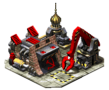

Motivo
Criei esse blog porque queria um espaço mais meu, que tivesse mais personalidade que um tweet, onde eu pudesse ficar isolado das redes sociais e escrever textos maiores sobre qualquer assunto sem parecer maluco. Também pra dar uma recompensa pra quem tivesse mais interesse em me conhecer. Tudo isso de um jeito bem mais 𝐀𝐞𝐬𝐭𝐡𝐞𝐭𝐢𝐜 ✨.
Escolhi o nome Pipas Jam em referência ao filme Nome Próprio, um dos meus filmes favoritos da vida. Nesse filme, a personagem principal chamada Camila tem um blog pessoal chamado Camila Jam, até hoje não sei o significado desse nome, mas curti, copiei e tamo aqui agora.
